Øster Alling
Grobkörniger, rötlicher Granit
Höhe: 153 cm
Breite: 74 cm
Dicke rechts: 14 cm
links 24 cm
Runenhöhe: 12 - 17 cm
Runenstein :
Thori errichtete diesen Stein zum Andenken an Fastulf, den Geschmeidigen (oder Fügsamen).
67 - Øster Alling - Letztes Update 22.09.2025
Listennummer : DR 109 / DK MJy 66
| Navidaten: 56.41228 10.31419 oder: Hovegaden 43, 8963 Auning |
Transliteration: : þuriR : ri=sþi | : stin : þani : aftiR | : fastulf : miuk-
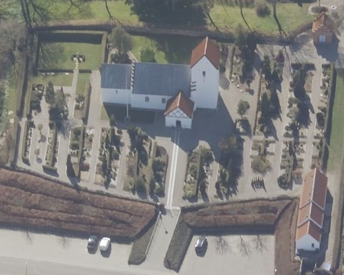
Das ist ein Luftfoto vom 01.04.2023 von Skråfoto - Lizenz: CC BY 4.0 - das die Kirche von Øster Alling zeigt. Skråfoto ist eine Webanwendung, die von Klimadatastyrelsen weltweit kostenlos bereitgestellt wird. Die Aufnahmen werden alle zwei Jahre erneuert und neben einer Senkrechtaufnahme wird ein Schrägbild aus jeder Himmelsrichtung angeboten, das man über eine Adresssuche aufrufen kann.
Es gibt keinen Hinweis auf den ursprünglichen Standort des Runensteins. Er wurde unter der Kirchentür von Øster Alling entdeckt. Heute befindet er sich im Waffenhaus der Kirche. Die Runeninschrift wird von den Runologen in die von 970 - 1020 datiert. Sie verläuft in drei parallel angeordneten vertikalen Linien und wird von links nach rechts, jeweils von unten nach oben gelesen.
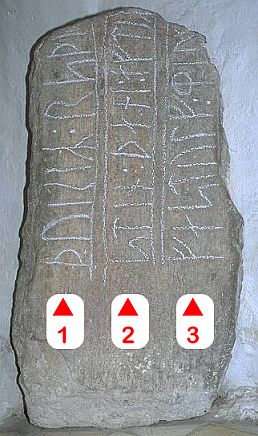
Eigenes Foto - Leserichtung von mir eingezeichnetVon Ole Worm (*13.05.1588 - 31.08.1654, Arzt, Universalgelehrter und der Begründer der Runologie)
 Bildquelle:
Digitale Sammlung der Königlichen Bibliothek Kopenhagen -
Lizenz:
Public Domain
Bildquelle:
Digitale Sammlung der Königlichen Bibliothek Kopenhagen -
Lizenz:
Public Domain
war 1622 der dänische König Christian IV. (*12.04.1577 - 28.02.1648)
 Bildquelle:
Wikipedia - Lizenz:
Public Domain
Bildquelle:
Wikipedia - Lizenz:
Public Domain
dazu bewogen worden am 11. August 1622 einen Brief an die Bischöfe von Dänemark und Norwegen zu senden, um darüber die Pfarrer im Land aufzufordern alle Informationen zu Denkmälern, Runensteinen, Grabhügel usw. an ihn zu melden, um die älteste Geschichte Dänemarks zu beleuchten. Unterstützer oder gar treibende Kraft war wohl Christian Friis (*4. November 1581 auf Gut Krastrup in Farstrup - 01. Oktober 1639, dänischer Adliger und königlicher Kanzler).
 Bildquelle:
Wikipedia - Lizenz:
Public Domain
Bildquelle:
Wikipedia - Lizenz:
Public Domain
Der Originaltext dieses Briefes lautet auszugsweise: "Wor gunst tillforn. Wy bede Eder och wille, at I Eders mueligste flid ahnwender allewegne wdj Eders stigt att opsøge och antegne alle slags antiquiteter och documenter effter medfølgende fortegnelsis indhold, och att I saadanne med flid lader optegne och engang inden Paaske førstkommendis wdj wortt cantzelie lader indleffuere. Dermed skie wor willghe. Befalendis Eder Gud. Skreffuitt paa wortt [slott] Kiøbenhaffn, den 10. augusti anno 1622. Vnder vort signett.Christian."
Darüber findet dieser Runenstein von Øster Alling seine erste Erwähnung im Jahre 1623 durch Albert Holst (Glaser in Hornslet) in seinem Bericht an die Altertümerkommission in Kopenhagen der dazu auch die u.a. Aufzeichnung anfertigte. In den sogenannten "Præsteindberetninger til Ole Worm 1623-25", also den Rückmeldungen der örtlichen Pfarrer zu der o.a. Aufforderung, finden sich auch die Mitteilungen von Albert Holst. Die eingegangenen Mitteilungen wurden zu einem späteren Zeitpunkt zusammengeheftet. An deren Ende finden sich Holts Abschriften einiger Runensteine, mit Bleistift paginiert von 61-69: Randers 1, Framlev, Vejlby, Øster Alling (Bl. 64), Gesing, Sønder Vinge 1 (Ulstrup), Stenalt, Glenstrup und Gesing. Wie Holst, dessen Namen ansonsten nicht überliefert ist, zu diesem Auftrag kam, bzw. warum er dies tat, oder wer ihm diesen Job gab, ist unbekannt.
Die Præsteindberetninger sind heutzutage online verfügbar unter: Frank Jørgensen, 1974, Præsteindberetninger til Ole Worm / 2 : Indberetninger fra Århus, Fyns og Lunde stifter 1623-25. Infos zu Holsts Aufzeichnungen finden sich ab Seite 7ff. (7 in der pdf-Datei). Seine eigentlichen Aufzeichnungen sind darin aber leider nicht enthalten, da sie nur ein Anhang waren. Auf der S. 14 (S. 35 in der pdf Datei) der eigentlichen Præsteindberetninger schreibt hingegen der damalige Pfarrer/Berichterstatter Niels Pedersøn eigenhändig, dass es in Vester und Øster Alling nichts gäbe, worüber zu berichten wäre!
Bei seiner Erfassungstour durch die Lande hat dann Jon Skonvig (*1600 - 1664, Pfarrer und der Runenzeichner für Ole Worm) - um 1627 - diese Zeichnung angefertigt.
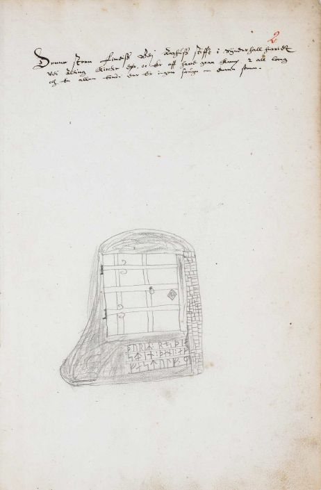
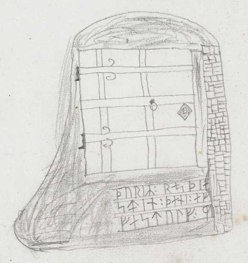
Bildquelle: AM 367 fol.Dazu hat er diese Informationen oberhalb niedergeschrieben:: "Denne steen Findiss Vdi Aarhuss stifft i Sÿnderhall herridt Vdi Alling Kircke dør, oc Er aff haard graa Kamp 2 all lang och En allen bred. der Er ingen saugn om denne steen".
Übersetzung: "Dieser Stein findet sich im Bistum Aarhus in der Harde Sønderhald vor der Tür der Alling Kirche und es ist ein grauer Felsbrocken, 2 Ellen lang und eine Elle breit. Es gibt keine Sage über diesen Stein".
Diese Aufzeichnungen von Jon Skonvig haben sich in "Den Arnamagnæanske Samling - A.M. 367 fol." erhalten. Diese entsprechende originale Seite 2r der AM 367 fol. im Internet über www.handrit.is angesehen werden.
Diese Sammlung - zu deutsch: Arnamagnäanische Sammlung - hat die Aufgabe nordische, mittelalterliche Manuskripte zu erhalten und zu erforschen, die auf der Sammlung von Árni Magnússon (*13.11.1663 - 07.01.1730, Professor und Handschriften Sammler) basiert.
 Bildquelle:
Digitale Sammlung der Königlichen Bibliothek Kopenhagen
-
Lizenz:
Public Domain
Bildquelle:
Digitale Sammlung der Königlichen Bibliothek Kopenhagen
-
Lizenz:
Public Domain
Sechs Handschriften: A.M. 366 fol. - A.M. 371 fol. haben sich darüber von Jon Skonvig erhalten.

Am Mittwoch, 28.09.2022, war ich in der Universität Kopenhagen in der Arnamagnæanske Samling und durfte das Original - AM 367 fol. - in Händen halten und eingehend fotografieren. Man bat mich aber von einer Veröffentlichung meiner Fotos abzusehen und stattdessen auf die digitalisierte Handschrift über www.handrit.is zu verweisen.
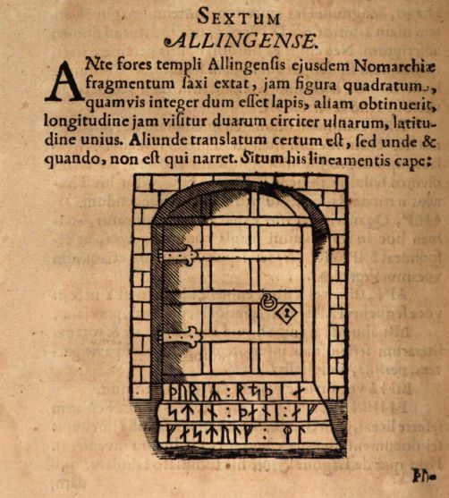
Über die Vorlage von Jon Skonvigs Zeichnung hat Ole Worm in seinem bahnbrechenden Werk "Danicorum Monumentorum Libri Sex", Hafniae, 1643, diesen Metallschnitt angefertigt, der darin auf der S. 288 wiedergegeben wird - Lizenz: Public Domain.
Screenshot aus der digitalisierten Ausgabe im Bestand der Bayerische Staatsbibliothek / MDZ Münchener DigitalisierungsZentrum Digitale Bibliothek - urn:nbn:de:bvb:12-bsb10800415-0 - abgerufen 09.03.2023
Mit Datum vom 09.02.1652 erging die von Ole Worm initierte königliche Aufforderung zur Übersendung bestimmter Runensteine nach Kopenhagen hinaus ins Land. Der Text der Aufforderung hat sich bewahrt und findet sich inzwischen digitalisiert in der "Nordisk Tidsskrift for Oldkyndighed, Band 1, 1832, S. 326". Dort findet man die für diesen Runenstein betreffende Passage: "Gunde Rosenkrands til Callø Lehn: Alling-stenen". Wie man sieht kam er dieser Aufforderung aber nicht nach (Anmerkung: Gunde Rosenkrands, geboren am 2. Dezember 1604, gestorben am 2. Dezember 1675, war ein dänischer Adliger). Auch in anderen Gemeinden wurde die Übersendung unterlassen, wofür es die unterschiedlichsten Gründe gab. Seitens Ole Worm oder der dänischen Regierung wurde die Aufforderung zur Übersendung der Runensteine nicht wiederholt, zumal 1654 in Kopenhagen die Pest wütete, die auch zum Tod von Ole Worm in diesem Jahr führte.
Die nächste Erwähnung des Runensteins findet sich bei Johannes Meier (1660, Lehrer und Verfasser) in seinem Werk Liber monumentorum Danicorum, qvi monumenta Danica Olai Wormii partim emendat partim locupletat (pdf-Datei anhand eigener Fotos von mir erstellt) von 1654 (Blatt 39) - Königlichen Bibliothek in Kopenhagen - GKS 2371 kvart


 Bildquelle:
Wikipedia - Lizenz:
Public Domain
Bildquelle:
Wikipedia - Lizenz:
Public Domain
hinzugefügt worden sein. Text und Zeichnungen der Handschrift - auch im Zusammenspiel - sind ansehnlicher ausgeführt als in NKS 799.
In der Königlichen Bibliothek in Kopenhagen hat sich von Johannes Meier aber auch noch eine zweite Handschrift erhalten - NKS 799 kvart - Joh. Mejeri Monumenta Runica in Dania (pdf-Datei anhand eigener Fotos von mir erstellt). Deren Entstehungsdatum ist nicht bekannt. Der Runenstein findet sich auf Blatt 38.


#/media/Datei:Fotoreproductie_van_een_schilderij,_voorstellende_een_portret_van_Christian_Friis_til_Kragerup_Christian_Friis_(til_Kragerup)_(titel_op_object),_RP-F-2001-7-742-16.jpg){kind=link}


NKS 799 kvart - Joh. Mejeri Monumenta Runica in Dania - Papier - 44 Blatt, Blatt 41-44 unbeschrieben, aus dem 18. Jahrhundert, vormals Nr. 70 in der Manuskript Sammlung von Peder Frederik Suhm (*18.10.1728 - 07.09.1798)
 Bildquelle:
Wikipedia - Lizenz:
Public Domain
Bildquelle:
Wikipedia - Lizenz:
Public Domain
Es handelt sich um
ein Büchlein mit einfachem Pappeinband, der Buchrücken ist aus
Leder und
verstärkte Ecken aus Leder weist der Buchdeckel auf. Es hat die
Maße: H: ca. 20
cm / B: ca. 17 cm / D: ca. 1,5 cm. Zu den einzelnen Zeichnungen im Büchlein
wurde ein einfacher Maßstab abgebildet.
Bei beiden Exemplaren
weist immer das rechte Blatt der Doppelseite in der oberen Ecke eine mit
Bleistift geschriebene Seitenzahl auf. Diese beiden Werke sind Abschriften von
früheren Werken, die die Zeit nicht überdauert haben.
Vielleicht sind sie in
Kopenhagen beim
Großbrand von 1728
vernichtet worden, als neben zahlreichen privaten Beständen auch ca.
35.000 Bücher der Königlichen Bibliothek
in
Kopenhagen ein Raub der Flammen wurden!
Die
GKS 2371 kvart soll laut
Prof. Ludv. F. A. Wimmer
(*07.02.1839 -
29.04.1920, Philologe und Runenforscher
-
link-LIVES -
Politiets registerblade
-
Bestattungsprotokoll)
 Bildquelle:
Fotografie zw. 1877-1900 von Fotograf Hansen & Weller
-
Det Kgl. Biblioteks billedsamling - Lizenz:
Public Domain
Bildquelle:
Fotografie zw. 1877-1900 von Fotograf Hansen & Weller
-
Det Kgl. Biblioteks billedsamling - Lizenz:
Public Domain
und seinen Infos von Christian Walter Bruun (*10.12.1831 - 28.02.1906, Königlicher Oberbibliothekar - link-LIVES)
 Bildquelle: Fotografie
um 1880 von Fotograf J. Petersen
(*19.03.1829 -
01.02.1905) -
Det Kgl. Biblioteks billedsamling - Lizenz:
Public Domain
Bildquelle: Fotografie
um 1880 von Fotograf J. Petersen
(*19.03.1829 -
01.02.1905) -
Det Kgl. Biblioteks billedsamling - Lizenz:
Public Domain
von
Niels Foss selbst abgeschrieben worden sein. Er hat die Texte laut
den Studien von
Erik Moltke
(*04.04.1901 - 19.10.1984, Runologe, Historiker)
offenbar überarbeitet, verkürzt oder geändert und seine eigene
Orthografie eingebracht (z.B. alt: haffuer - bei Foss: haver / tyck/tyk /
kircke/kirke / oc/og u.a.).
In der
NKS 799 kvart hingegen steht auf der Seite 37 links unten "Niels
Knudsen Jerne" und seine Handschrift lässt vermuten, dass er die
gesamte Abschrift angefertigt hat. Er war offenbar ein professioneller Schreiber
und könnte mit dem Niels Knudsen identisch sein, der
1728 "Skriverkarl" auf dem Holmen (Stadtviertel von
Kopenhagen) war, also ein Mann der schnell viele Texte schreiben und liefern
konnte. Er wurde am 08.11.1737 zum "ekvipageskriver"
ernannt. Es scheint dass er sich entgegen
Niels Foss sehr eng an das Original gehalten hat.
Offenbar gab es laut dem Katalog über die Büchersammlung
von
Peter
Hansen Resens (*17.06.1625 -
01.06.1688)
 Bildquelle:
Wikipedia - Lizenz:
Public Domain
Bildquelle:
Wikipedia - Lizenz:
Public Domain
"Bibliotheca
Regiæ Academiæ Hafniensi donata" Hafniæ (Kopenhagen) von
1685 - siehe
S. 273 - früher noch ein drittes Werk von
Johannes Meier mit dem Titel "Johan. Meieri
liber MS. de Monumentis Runicis sive antiqvis Danicics".
Quelle:
Erik
Moltke -
Jon Skonvig og de andre runetegnere. Et bidrag til runologiens historie i
Danmark og Norge I-II,
1956-58
Band 2
-
Kapitel 13
Zwischen Montag, 26.09.2022, und Mittwoch, 28.09.2022, habe ich in der Königliche Bibliothek - Den sorte Diamant - in Kopenhagen - u.a. diese beiden alten Handschriften nach Online-Vorbestellung zur Ansicht erhalten. Ich durfte mir Aufzeichnungen machen, sie aber auch uneingeschränkt fotografieren. Ich habe sie mit dem Smartphone komplett als Doppelseiten fotografiert und daraus jeweils eine pdf-Datei erstellt. Vielleicht hat ja jemand Bedarf an diesen seltenen Ausgaben, die aufgrund ihres Alters keinem Urheberrrecht mehr unterliegen.
Der o.a. Peder Hansen Resen (*17.06.1625 - 01.06.1688, Jurist und Historiker) hat mit dem von ihm über 20 Jahre gesammelten Material das großartige Werk "Atlas Danicus", bestehend aus letztlich 39 Folianten, geschaffen. Nur geringe Teile wurden aber zu seiner Lebzeit gedruckt. Die Bände wurden wenige Jahre nach seinem Tod 1692 an die Königliche Bibliothek Kopenhagen übergeben. Aufbewahrt wurden sie auf dem Dachboden der Trinitatis Kirche. Dort wurden sie fleißig studiert, abgeschrieben und zeitweise ausgeliehen. Leider wurde dann ein Großteil davon beim Kopenhagener Großbrand 1728 zerstört. Es hat sich neben einigen Originalseiten - siehe Arnamagnäanische Sammlung - AM 359 fol. / AM 360 fol. / AM 361 fol. und AM 362 fol. (digitalisiert) - nur eine (verkürzte) Abschrift und außerdem Kupferstiche von etwa 200 Städteansichten aus der Vogelperspektive erhalten. Originale dieser AM 359/360/361 fol sind über die Universität Kopenhagen - Institut for Nordiske Studier og Sprogvidenskab (NorS) - AM 359 fol / AM 360 fol / AM 360 fol (Karten) / AM 361 fol - in sw abrufbar. Eine zweite (verkürzte) Ausgabe war von Vincent Lerche (*04.04.1666 - 28.07.1742, Jurist, Architekt) beauftragt worden, diese wurde aber beim Brand von Schloss Christiansborg im Jahr 1794 vernichtet.
In der Königlichen Bibliothek in Kopenhagen wird seit 1803 in der Sammlung Uldall (186 folio) diese einzige verbliebene Ausgabe, die in den 1750er Jahren durch den Hofbaumeister Laurids de Thurah (*04.03.1706 - 06.09.1759)
 Bildquelle:
Wikimedia - Lizenz:
Public Domain
Bildquelle:
Wikimedia - Lizenz:
Public Domain
aus verstreuten Resten des Atlas Danicus in 7 Bänden rekonstruiert worden war, aufbewahrt:
Wie diesem Titel zu entnehmen ist, gehörte dieses Exemplar vormals Adam Gottlob Graf von Moltke (*10.11.1710 - 25.09.1792, Staatsmann, Diplomat)
 Bildquelle:
Wikimedia - Lizenz:
Public Domain
Bildquelle:
Wikimedia - Lizenz:
Public Domain
Nach dessen Tod erwarb Herman Treschow (*11.12.1739 - 02.05.1797, Professor für Theologie, Pfarrer) diese Ausgabe. Peter Uldall (*29.06.1743 - 11.11.1798, Jurist, Theologe)
 Bildquelle:
Wikimedia - Lizenz:
Public Domain
Bildquelle:
Wikimedia - Lizenz:
Public Domain
wiederum kaufte sie für 170 Rigsdaler (Rigsdaler zu 24 Skilling - damals 1 ½ Mark) nach dessen Ableben. Er hatte aber nicht lange Freude daran, denn er starb ein Jahr später an einem Schlaganfall. Sein Sohn, Justizrat W. A. Uldall, schenkte diese Ausgabe der Kgl. Bibliothek im Jahr 1803, wo dieses großartige Werk noch heute verwahrt wird - Ein Band hat übrigens die stolze Größe H/B/D von 40 cm x 29,5 cm x 9,5 cm.
Im Atlas VI. ist auf der Seite 578-79 ein Eintrag / Zeichnung vom Runenstein enthalten, die ich am 28.09.2022 vor Ort fotografieren durfte.


Auf der S. 578 findet sich der Eintrag (übersetzt): "Gjesing ...Worm erzählt im 5. Buch seiner Monumenta, dass in der Alling Kirche in der gleichen Region vor der Türe ein Stück eines Steines liegt, zwei Ellen lang und eine breit, auf dem diese Worte mit Runen geschrieben stehen: Thunir resdia stin deni efter Factulssimi. Worms Übersetzung: Thor errichtete diesen Stein zum Gedenken an Fastulv - Seite 579 - mein ... Zeichnung."
Erik Pontoppidan (der Jüngere, *03.09.1698 - 20.12.1764, dänisch-lutherischer Bischof, Theologe und Autor)
 Bildquelle:
Wikipedia - Lizenz:
Public Domain
berichtet in seinem Werk von 1768
"Den Danske
Atlas"
- Band IV - Cap. VIII.
- auf der S. 285 (S. 15 q in der pdf-Datei)
über den Runenstein:
Bildquelle:
Wikipedia - Lizenz:
Public Domain
berichtet in seinem Werk von 1768
"Den Danske
Atlas"
- Band IV - Cap. VIII.
- auf der S. 285 (S. 15 q in der pdf-Datei)
über den Runenstein:
"WORMIUS Mon. Dan. Pag. 288 beretter, at uden for Alling Kirkedør laae en Steen, som før havde staaet paa et andet Sted, hvorpaa stod med Runeskrift, at Thorer reiste denne Steen over Faskuls. Men han nævner ikke, om det er Øster eller Vester Alling".
Übersetzung: "Ole Worm berichtet in seiner Danicorum Monumentorum Libri Sex auf der S. 288, dass außerhalb der Kirchentür von Alling ein Stein lag, der zuvor an einem anderen Ort gestanden hatte, auf dem in Runenschrift geschrieben steht, dass Thore diesen Stein über Fastulv errichtete. Aber es wird nicht erwähnt, ob es Øster oder Vester Alling ist."
Søren Abildgaard (*18.02.1718 - 02.07.1791, Zeichner, Kupferstecher und Geologe)
 Bildquelle:
Jellingprojektet - Lizenz:
Public Domain -
http://www5.kb.dk/images/billed/2010/okt/billeder/object444188/da/
Bildquelle:
Jellingprojektet - Lizenz:
Public Domain -
http://www5.kb.dk/images/billed/2010/okt/billeder/object444188/da/
hat über den Runenstein zwei Eintragungen in seinem "Dagbog VII" vorgenommen. Einmal auf der S. 4 und dann noch einmal auf der S. 35. Neben der Zeichnung der Runeninschrift, die er jeweils wiedergibt, hat er ergänzend Angaben zum Ort und zu der Steingröße gemacht. Auf dem Tagebuch Titel ist für mich keine Jahresangabe zu entziffern, aber "Wiborg og Aars Stift" steht dort. Von daher müsste es aus dem Jahr 1770 sein, als ihn seine jährliche Reise durch das Aarhus Amt führte (Quelle: Abildgaard - En Arkivtegnemester på rejse - Kirsten-Elizabeth Høgsbro).
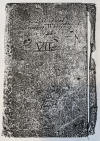 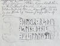 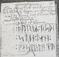


Seine Tagebücher befinden sich heute im Antiqvarisk-Topografisk Arkiv in Kopenhagen. Dies sind Fotografien einer Kopie, die auch dort vorgehalten wird und die ich dort am 28.09.2022 fertigen durfte.

Johan Gustav Liljegren (*27.02.1791 -02.06.1837, schwedischer Nationalarchivar und Archäologe)
 Bildquelle:
Schwedisches Reichsarchiv - Lizenz:
Public Domain
Bildquelle:
Schwedisches Reichsarchiv - Lizenz:
Public Domain
hat den Runenstein von Øster Alling in seinem Werk "Run-Urkunder" von 1833 auf der S. 171 mit der Nummer 1501 als "Allinge, i kyrkodörren" aufgeführt.
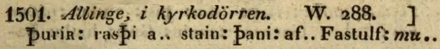
Dieses Werk findet sich in einer digitalisierten Ausgabe im Internet über die Bayerische Staatsbibliothek / MDZ Münchener DigitalisierungsZentrum Digitale Bibliothek - urn:nbn:de:bvb:12-bsb10431145-1 - Screenshot vom 10.03.2023.
Als der Runenstein im Jahre 1856 durch Rasmus Henrik Kruse (*07.08.1796 - 30.05.1877, Landschaftsmaler - link-LIVES - Heirat 21.12.1851)
 Bildquelle:
Det Kgl. Biblioteks billedsamling - Lizenz:
Public Domain
Bildquelle:
Det Kgl. Biblioteks billedsamling - Lizenz:
Public Domain
untersucht wurde, lag er noch in der Türöffnung, von einer neuen Bodenfliese bedeckt. Kruse verhandelte mit dem Pastor Jørgen Tørsleff (*05.09.1804 - 13.02.1877, Pfarrer in Vester und Øster Alling ab 08.08.1837 bis 22.07.1858 - link-LIVES) ,
 Bildquelle:
Trøst-Hansens sognekort -
Nr.
3059 -
Lizenz:
Public Domain
Bildquelle:
Trøst-Hansens sognekort -
Nr.
3059 -
Lizenz:
Public Domain
worauf er von diesem die Erlaubnis erhielt den Runenstein herausnehmen und im Waffenhaus, links von der Eingangstür zur Kirche, aufstellen lassen durfte, wo er übrigens noch heute steht.
Von Kruse hat sich in seinen Aufzeichnungen mit dem Titel "Nørre Jyllands Mærkværdigheder i det 19. Aarh. Hs. Bd 1-2 (med) Tillæg 1-2" eine Zeichnung von 1856 bewahrt, die sich in dem Band Tillæg 1 zwischen seinen Aufzeichnungen auf den Seiten 14 und 15 findet. Darin berichtet er von seinem Bemühen mit Pastor Jørgen Tørsleff (Kruse schreibt Törslev), gibt die Inschrift in Runenzeichen erst so wieder
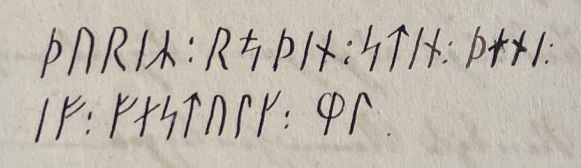
und dann wie sie seiner Meinung nach richtig gelesen wird:
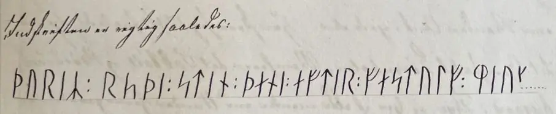
Er macht auch ausführliche Angaben zu den Steinmaßen, weist darauf hin, dass in "R(i)spi" die Rune "I" fehlt usw.
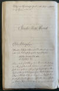 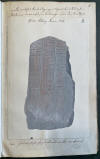 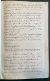 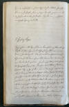


Dieses Werk wird heute im Nationalmuseum in Kopenhagen, Antikvarisk-Topografisk Arkiv, aufbewahrt. Dort durfte ich am Dienstag, 27.09.2022, zu Gast sein und die vier Bände in Händen halten, durcharbeiten und fotografieren.
Durch Prof. Julius Magnus Petersen (*04.09.1827 - 31.01.1917, Archäologischer Zeichner und Restaurator - link-LIVES - Bestattungsprotokoll)
 Bildquelle: Fotografie
von 1903 von Fotograf Marius Christensen
(*24.06.1874 -
25.06.1907) -
Det Kgl. Biblioteks billedsamling - Lizenz:
Public Domain
Bildquelle: Fotografie
von 1903 von Fotograf Marius Christensen
(*24.06.1874 -
25.06.1907) -
Det Kgl. Biblioteks billedsamling - Lizenz:
Public Domain
wurde diese Zeichnung im Jahr 1869 für das Runenwerk von Prof. P. G. Thorsen (*07.08.1811 - 06.05.1883, Bibliothekar, Runenforscher und Historiker - link-LIVES - Artikel: Levnedsbeskrivelser af de ved Københavns Universitets Firehundredaarsfest promoverede Doktorer, Illustreret Tidende 1882, Nr. 1235 - vom 27.05.1833 / Grabstein in Varde / Eheschließung in Varde am 19. August 1848)
 Fotografie
zw. 1863-1900 von
Fotograf Budtz Müller (*26.12.1837 -
30.12.1884) -
Det Kgl. Biblioteks billedsamling - Lizenz:
Public Domain
Fotografie
zw. 1863-1900 von
Fotograf Budtz Müller (*26.12.1837 -
30.12.1884) -
Det Kgl. Biblioteks billedsamling - Lizenz:
Public Domain
"De danske Runemindesmærker, beskrevne og forklarede af P.G. Thorsen Anden Afdeling Jyllands Runemindesmærker tilligemed Meddelelser om alle Øernes, Afbildninger og Text, 1869" - Nr. 27 - angefertigt - Google Scan.
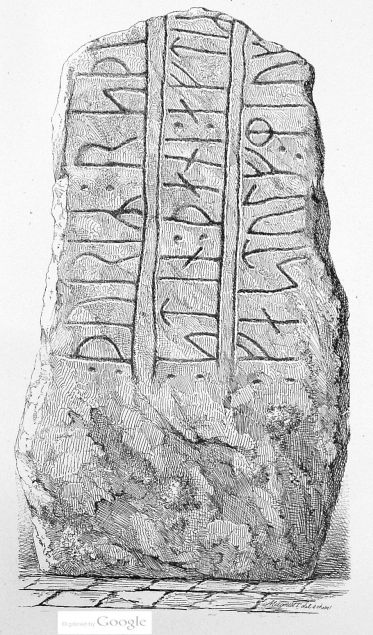
Thorsen hat in seinem Band II - Text aus dem Jahr 1880 seine kurzen Aufzeichnungen zu diesem Runenstein auf der S. 89-90 veröffentlicht.
P. G. Thorsens Nachlass (Bezeichnet als: P. G. Thorsens optegnelser, tegninger m.m. vedrørende runer og runemindesmærker - überführt aus der Kopenhagener Universitätsbibliothek 1929 - Gemäß Ministerialschreiben vom 04.03.1929; früher benannt als Additamenta 612 kvart - findet sich heute in der Königlichen Bibliothek unter NKS 3296 (in mehreren einzelnen Pappschachteln). In der Pappschachtel Nr. 17 fand ich bei meinem Besuch am 27.09.2022 diese beiden Notizzettel. Es handelt sich meines Erachtens um handschriftliche Aufzeichnungen von Thorsen.


Laut Lis Jacobsen/Erik Moltke - Danmarks Runeindskrifter - Text - 1942, Nr. 109, S. 147, sollte sich in dessen Hinterlassenschaft eigentlich auch eine Zeichnung von Magnus Petersen von 1869 befinden. Ich habe da keine gefunden - schade!
Durch
Durch Prof. Ludv. F. A. Wimmer (Näheres zur Person siehe oben) wurde der Runenstein am 31.08.1877 und am 15.07.1882 vor Ort untersucht. Seine Untersuchungsergebnisse / Ausführungen finden sich in dem großformatigen Runenwerk De Danske Runemindesmaerker - Undersøgte og tolkede af Ludv. F. A. Wimmer, Bd. II, Runestenene i Jylland og på Øerne. 1899-1901 unter der Nr. 33, S. 167 ff. mit dieser Zeichnung von Prof. Julius Magnus Petersen, die von Prof. Ludv. F. A. Wimmer noch überarbeitet wurde.
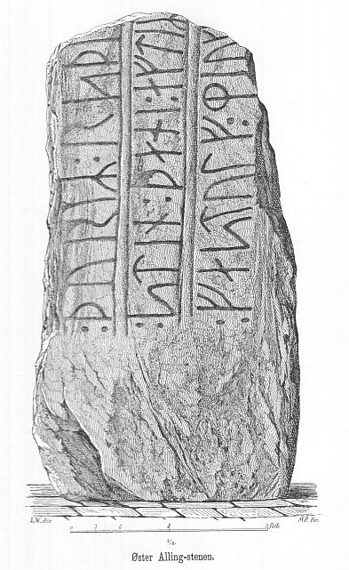
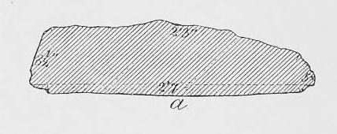
Prof. Ludv. F. A. Wimmer hat seine jahrelangen Aufzeichnungen der "Kgl. Bibliotek" in Kopenhagen überlassen. Ein Verzeichnis darüber wurde 1915 in Buchform herausgegeben - "Collectio runologica Wimmeriana: Fortegnelse over Ludv. F. A. Wimmers runologiske o. a. Samlinger i Det kgl. Bibliotek"
In seinen Unterlagen in der Königlichen Bibliothek befinden sich unter "III - Originaltegninger af de danske Runemindesmærker, udførte paa Undersøgelsesrejserne af Magn. Petersen og kontrollerede paa Stedet af Ludv. Wimmer, samt Prøvetryk af de paa Grundlag af de nævnte Tegninger, Aftryk o. s. v. til De danske Runemindesmærker" udførte Afbildninger med Wimmers Rettelser"


zu dem Runenstein von Øster Alling unter der Nr. 46 Aufzeichnungen, wobei ich diese Zeichnung von Prof. Julius Magnus Petersen - datiert auf den 31.08.1877 - am 27.09.2022 fotografieren durfte.

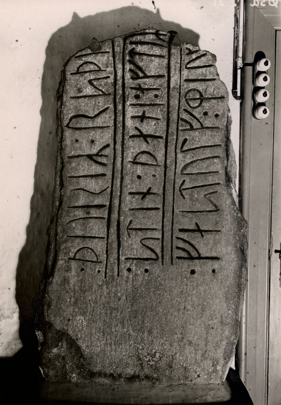
Bildquelle: Digitale Sammlung Nationalmuseum Kopenhagen - Lizenz: CC-BY-SA
Diese Fotografie hat Erik Moltke (*04.04.1901 - 19.10.1984, Runologe, Historiker - link-LIVES) am 30.07.1930 aufgenommen.
 Bildquelle: Scan von Buchumschlag "Runerne i Danmark og ders
oprindelse" - Erik Moltke - 1976 - Lizenz:
CC-BY-SA
Bildquelle: Scan von Buchumschlag "Runerne i Danmark og ders
oprindelse" - Erik Moltke - 1976 - Lizenz:
CC-BY-SA
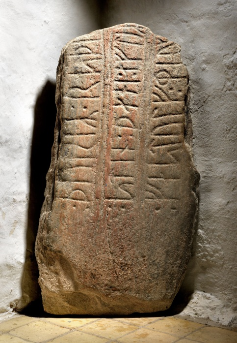
Im Vorfeld zu dem 2016 erschienenen Buch von Lisbeth M. Imer (*1973, Runologin am Nationalmuseum Kopenhagen) "Danmarks Runesten - en fortælling" reiste sie mit dem Fotografen Roberto Fortuna zur Bestandsaufnahme durch die Lande. Dieser hat die Runensteine mit Schräglicht aufgenommen und darüber wirklich herausragende Fotos erzielt. Dieses Foto stammt vom 08.03.2012.
Digitale Sammlung Nationalmuseum Kopenhagen - Lizenz: CC-BY-SA
Im Rahmen meiner 2022er Jütland Wikinger Tour war ich am Mittwoch, 15.06.2022, vor Ort. Die Kirche war verschlossen, wurde mir aber freundlicherweise von der gerade mit Arbeiten im Kirchhof befassten "Graverin" geöffnet. Dankeschön!
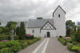 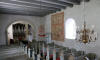 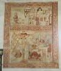 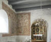 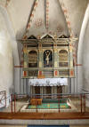 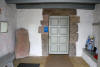


Die Kirche trägt den Namen St. Karens Kirche. Dies ist auf der ältesten der beiden verbundenen Priestertafeln im Turmraum zu sehen. Die Schutzpatronin der Kirche Øster Alling aus katholischer Zeit ist also Sancta Catarina = St. Karen, deren Gedenktag der 25.11. ist.
Die Kirche wurde im 12. Jahrhundert zunächst mit Chor und Schiff erbaut; nicht lange danach wurde der Turm hinzugefügt. Es wird vermutet, dass an der Stelle früher eine Holzkirche stand. Die meisten Fresken stammen aus der Zeit der Einführung der Reformation 1530-40. Auf dem Gemälde links vom Chorbogen (über Eck) ist ein Bild des Gekreuzigten; es ist von Ranken umgeben und fein gerahmt. An der Nordwand - 3. Foto oben - sieht man oben: die Leidensgeschichte, das Gebet Jesu in Gethsemane (schlecht erhalten) und seine Darbietung an Pilatus vor dem Hintergrund der Kirchen und Türme einer mittelalterlichen Stadt. Darunter die Kreuzabnahme, die Bestattung und Maria mit ihrem toten Sohn sowie eine Kirche mit Zwiebelturm.
Das Altarbild ist aus Kiefernholz und scheint aus derselben Zeit und Werkstatt wie die Kanzel zu stammen, die 1590 montiert wurde.
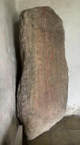 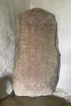 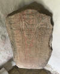 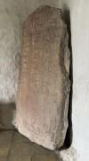 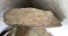


Wenn ich sehe was da bei meinen Fotos (Canon 70D und iPhone 12 Pro) von der Inschrift wirklich erkennbar ist und ich mir dann das obige Foto von Roberto Fortuna - mit High Tech Beleuchtung von schräg usw. - anschaue, auf dem die Inschrift so klar hervortritt, überhaupt kein Vergleich!
Bei meiner 2016er Wikingertour war ich am Donnerstag, 25. August 2016, auch an der Kirche von Øster Alling. Leider war die Kirche verschlossen. Aber auf der Infotafel war die Telefonnummer des Küster, der erfreulicherweise sofort sein Kommen zusagte. Herzlichen Dank dafür auch nochmal auf diesem Weg. Herr Nielsen gab mir bei unserem Gespräch auch den Hinweis auf das wenige Tage zuvor erschienene Buch von Lisbeth M. Imer (*1973, Runologin am Nationalmuseum Kopenhagen) "Danmarks Runesten - en fortælling" mit herausragenden Fotos des Fotografen Roberto Fortuna. Schon am nächsten Tag erwarb ich es in einem Buchladen in Hobro.
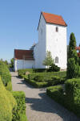 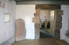 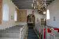 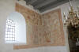 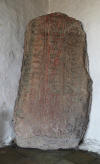 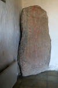 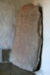 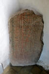


Hier kann man die Informationen zu dem Runenstein in der dänischen Runendatenbank abrufen.
Die entsprechenden Eintragungen in "Fund og Fortidsminder" zu dem Runenstein finden sich hier. Darin eingebettet ist auch ein Zustandsbericht des Steinrestaurators Leif Vognsen aus 2018.
Über diesen Link finden sich zu dem Runenstein Informationen des Forschungsprojektes "Runes" der Akademie der Wissenschaften zu Göttingen.
Eine informative Webseite zu der Kirche und deren Ausstattung - in dänischer Sprache - findet sich hier - Textauszüge übersetzt oben zur Kirche/-ausstattung.